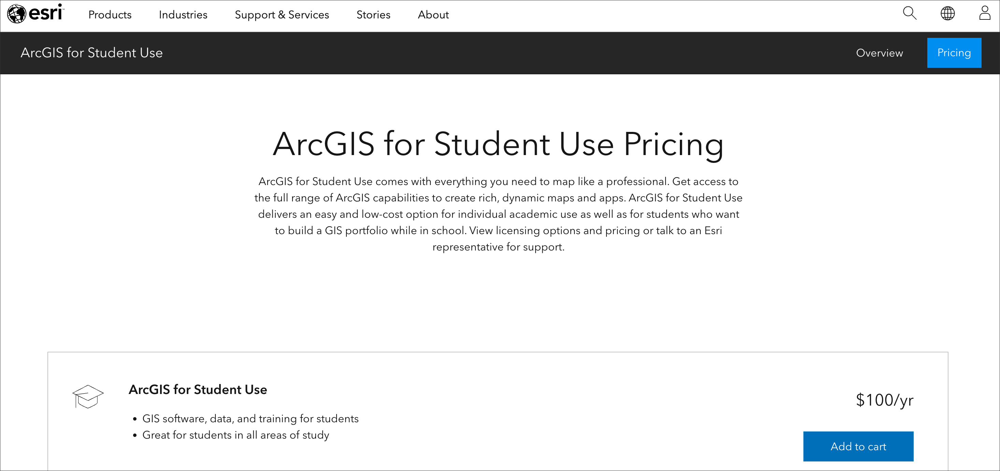

Advanced GIS Study and Research Recommendations
Fall 2025 | NINT5380 - CRN2189
Preamble
Introductory GIS courses at The New School have traditionally served as foundational quantitative offerings with connections to programmatic themes within the School for Public Engagement.
The following guide is designed to offer some linkages that you can make outside of a traditional classroom environment. These offerings are largely open-source, often low-cost and often free. This offer listing is regionally focused (NYC region), or accessible online.
Online, Text-Based Courses
- This course is well documented for a traditional classroom approach; it is open-source and free.
- This course is well documented for a traditional classroom approach; it is open-source and free. Consider this course if interested in using
Pythoninstead ofR.
- Well organized online course with introduction and advanced sections coupled with datasets for a python approach to spatial analysis.
- Another online course that features spatial analysis within python.
- This Coursera specialization track offers several GIS courses and enrollment is free.
- Teaching materials for a workshop introducing R and R-spatial.
- Open-source spatial course focused on R and R-spatial
- Online version of hardcopy book from the developer of the tidycensus R package - arguably the best tool for working with US Census data within a spatial context.
- Good online refresher course for essential spatial analysis in both desktop GIS and R.
- Introduction to the basics of Python programming and geographic data analysis.
Guides and Articles
- This article is a nice overview of different components of web-mapping, and how one might sequence learning them.
Online applications, portals and utilities
- GEE is an online portal and coding application used to run analysis and queries for very large, global earth science datasets. The coding language is based in javascript where the user/analyst creates scripts in the GEE editor to return specific spatial results in a browser.
- Good introduction to working in GEE.
- Although not a portal or utility per se, the ARSET program allows for continuing education in earth sciences, and they often have webinar sessions on a variety of spatial analysis and data topics.
- Sentinel Hub is an engine for processing of petabytes of satellite data. It is opening the doors for machine learning and helping hundreds of application developers worldwide. It makes Sentinel, Landsat, and other Earth observation imagery easily accessible for browsing, visualization and analysis.
- Kepler.gl is a powerful open source geospatial analysis tool for large-scale data sets. This portal and utility allows for browser-based data manipulation and visualization, designed originally for working with Uber transporation datasets. A blog overview toolbox is located HERE.
- CARTO is arguably the leading online spatial database portal for web-based mapping.
- Often used in conjunction with CARTO, Mapbox Studio allows developer tools for basemaps. The application also allows for user data as map layers. Very powerful and intuitive web-based, browser-based application for cartographic design and web-mapping. The free tier allows for ample storage space and access to the core Mapbox Studio tools.
- Recently launched as an alternative, web-based mapping application with a generous free-tier, worth checking out for quickly producing spatial data and web-based maps.
- Dead simple interactive maps platform with a generous free-tier. Well designed, nice interface, highly recommended as a basic online mapping platform.
Desktop GIS Applications
- In addition to open-source QGIS, ESRI ArcGIS Pro (successor to ArcGIS Desktop) is an excellent desktop software that is industry-standard and worth the time to in which to develop proficiency.
- For $100.00 per year, ESRI offers a student version of ArcGIS Pro 3.0 software package. It is the same ArcGIS Pro that ships at full price; what’s different is that the student user license is more restrictive. However, its a great option if you would like to get experience working in another desktop GIS - arguably the most extensive desktop GIS in industry. Make sure to check the system requirements as its a large piece of software and it runs only on PC machines with Windows installed.

A fully open-source, cross-platform and free GIS application can be easily installed and used on both Mac OS and Microsoft Windows 11 machines. All fundamentals you have learned in this course will be applicable to both QGIS and ESRI platforms.
Regional GIS Academic Programs and courses
- Housed within the Graduate School of Architecture, Planning and Preservation at Columbia, several GIS course offerings are available within this graduate program.
- Hunter College offers a robust GIS program with multiple course offerings organized around an advanced certificate. From the website:
The GIS Certificate program is a 15-credit post-baccalaureate professional program that offers advanced training in Geographic Information Science (GIS).
- Another certificate program, Pratt offers GIS and spatial analysis courses that can lead to a certificate. More information HERE.
Regional GIS Organizations
- GISMO is New York City’s oldest GIS interest group, comprised of public and private mapping enthusiasts from the tri-state area. If you are looking for a GIS-related job in the region, GISMO is a good organization to join.
- As the name suggests, this is New York State’s formal GIS association. Like GISMO, a good organization to join for networking in the GIS field within the state.
NINT5380 GIS - Fall 2025 - List of Weekly Course Content and Assignments
Class 1 | GIS + QGIS orientation:
Class 2 | QGIS Interface:
Class 3 | Latitude & Longitude - Points:
Class 4 | Cartographic Principles & Intro to Symbolization:
Class 5 | Thematic Mapping:
Class 6 | Introduction to the Raster Data:
Class 7 | Map Projections:
Class 8 | Geoprocessing I:
Class 9 | Mapping Vulnerability:
Class 10 | Geoprocessing II:
Class 11 | Remote Sensing for Urban Analysis: